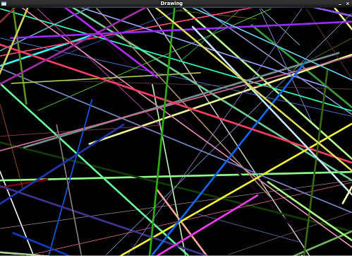
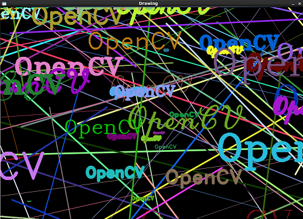

/*
* FileName : random_gen.c
* Author : xiahouzuoxin @163.com
* Version : v1.0
* Date : Tue 29 Jul 2014 08:31:41 PM CST
* Brief :
*
* Copyright (C) MICL,USTB
*/
#include <cv.h>
#include <highgui.h>
#include <iostream>
using namespace std;
using namespace cv;
const char wndname[] = "Drawing";
const int RAND_N = 100;
void help(void)
{
cout<<"Usage:./drawing"<<endl;
}
static Scalar random_color(RNG& rng)
{
int icolor = (unsigned)rng;
return Scalar(icolor&0xFF, (icolor>>8)&0xFF, (icolor>>16)&0xFF);
}
int main(int argc, char *argv[])
{
int line_type = CV_AA;
int i = 0;
int width = 1000;
int height = 700;
int x1 = -width/2;
int x2 = width*3/2;
int y1 = -height/2;
int y2 = height*3/2;
const int DELAY = 10;
RNG rng(0xFFFFFFFF);
Mat image = Mat::zeros(height, width, CV_8UC3);
imshow(wndname, image);
waitKey(DELAY);
for (i=0; i<RAND_N; i++) {
Point pt1;
Point pt2;
pt1.x = rng.uniform(x1, x2);
pt1.y = rng.uniform(y1, y2);
pt2.x = rng.uniform(x1, x2);
pt2.y = rng.uniform(y1, y2);
line(image, pt1, pt2, random_color(rng), rng.uniform(1,5), line_type);
}
imshow(wndname, image);
waitKey(0);
for (i=0; i<RAND_N; i++) {
Point org;
org.x = rng.uniform(x1, x2);
org.y = rng.uniform(y1, y2);
putText(image, "OpenCV",org, rng.uniform(0,8),rng.uniform(0,10)*0.5+0.1,
random_color(rng), rng.uniform(1, 10), line_type);
}
imshow(wndname, image);
waitKey(0);
return 0;
}RNG是OpenCV中的随机数生成类，其定义在core.hpp中，
class CV_EXPORTS RNG
{
public:
enum { UNIFORM=0, NORMAL=1 };
RNG();
RNG(uint64 _state);
//! updates the state and returns the next 32-bit unsigned integer random number
unsigned next();
operator uchar();
operator schar();
operator ushort();
operator short();
operator unsigned();
//! returns a random integer sampled uniformly from [0, N).
unsigned operator()(unsigned N);
unsigned operator ()();
operator int();
operator float();
operator double();
//! returns uniformly distributed integer random number from [a,b) range
int uniform(int a, int b);
//! returns uniformly distributed floating-point random number from [a,b) range
float uniform(float a, float b);
//! returns uniformly distributed double-precision floating-point random number from [a,b) range
double uniform(double a, double b);
void fill( InputOutputArray mat, int distType, InputArray a, InputArray b );
//! returns Gaussian random variate with mean zero.
double gaussian(double sigma);
uint64 state;
};提供了两种随机数——均匀分布（uniform)和高斯正态分布（gaussian）。本文使用的是随机分布，两个参数分布表示均匀分布的下限和上限。RNG rng(0xFFFFFFFF);中的0xFFFFFFFF表示初始的随机值。
Mat矩阵初始化：
Mat image = Mat::zeros(height, width, CV_8UC3);line用于绘制直线，也定义在core.hpp中，
//! draws the line segment (pt1, pt2) in the image
CV_EXPORTS_W void line(Mat& img, Point pt1, Point pt2, const Scalar& color,int thickness=1, int lineType=8, int shift=0);还有其它绘图函数circle、ellipse、rectangle等也也可以从core.hpp中找到原型，可用到时自行学习。
putText可以将文字添加到图片中，
//! renders text string in the image
CV_EXPORTS_W void putText( Mat& img, const string& text, Point org,
int fontFace, double fontScale, Scalar color,
int thickness=1, int linetype=8,
bool bottomLeftOrigin=false );其第一个参数img就是要添加文字的图像，第二个参数就是要添加的文字（程序中是"OpenCV"）
关于颜色：颜色是用RGB三通道表示的，因此上面函数中颜色参数的类型都是Scalar类型。Scalar在OpenCV中类似于向量，但其长度最大为4通道，源程序中
Scalar(icolor&0xFF, (icolor>>8)&0xFF, (icolor>>16)&0xFF);将随机数的值取出分别作为RGB三个通道的颜色值。

随机线条的效果

添加“OpenCV”文字后效果